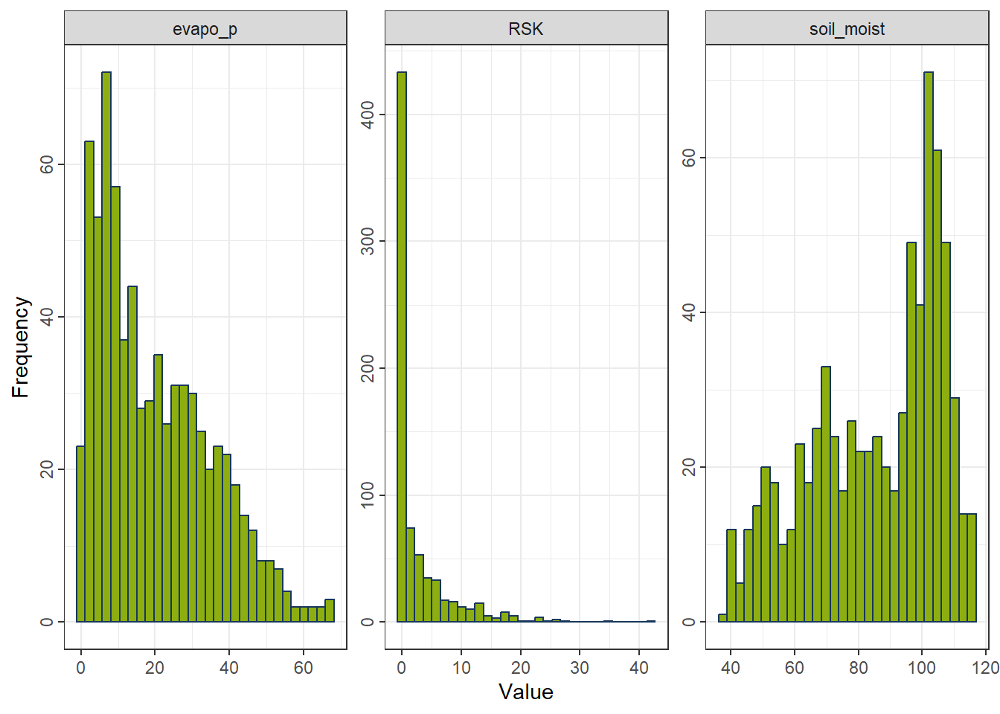
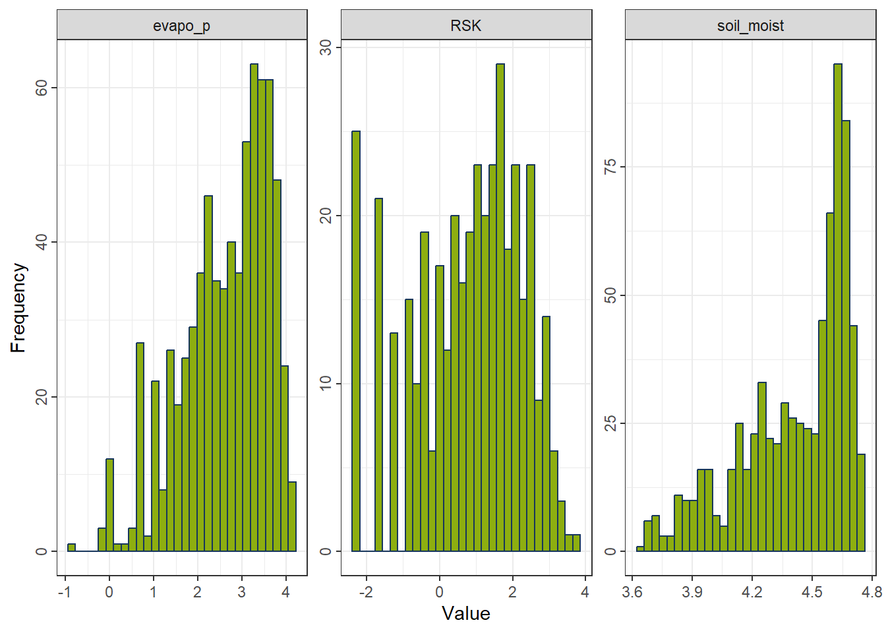
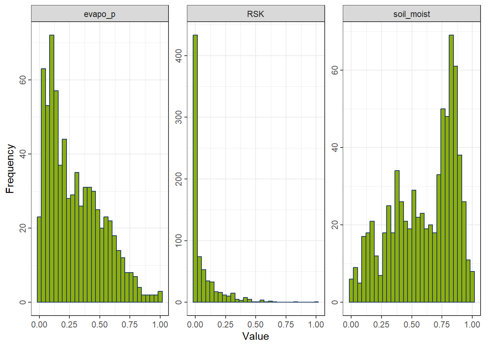
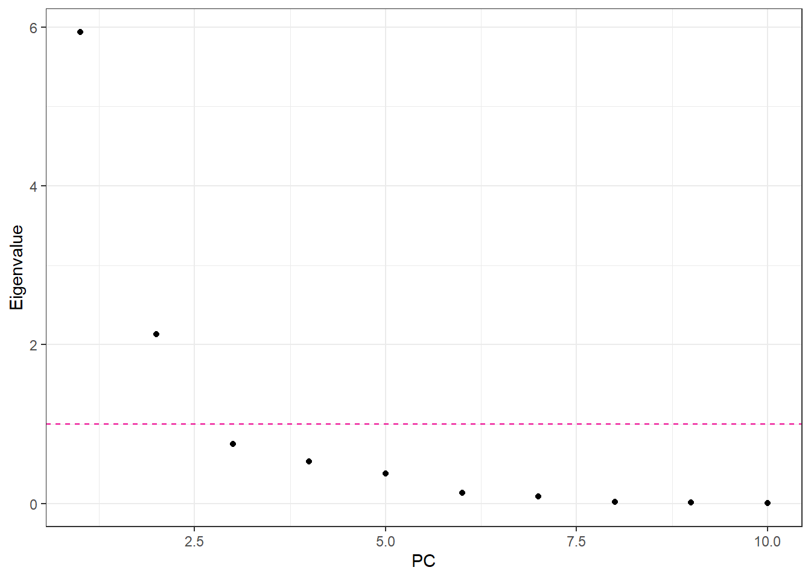
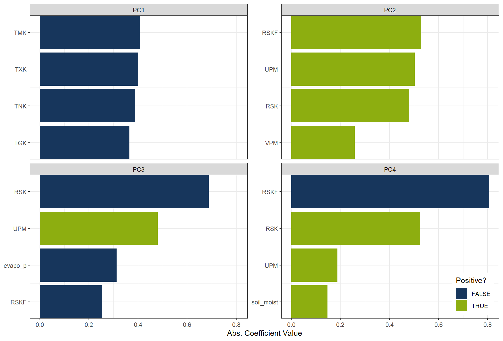

library(tidyverse)
theme_set(theme_bw())
library(tidymodels) # parsnip + other tidymodels packages
library(learntidymodels)
library(embed)
# Helper packages
library(readr) # for importing data
library(broom.mixed) # for tidying Bayesian model output
library(dotwhisker) # for visualizing regression results
library(skimr) # for variable summaries
library(nycflights13)
library(ggforce)Feature Engineering and Selection
1 Library
Code
color_RUB_blue <- "#17365c"
color_RUB_green <- "#8dae10"
color_TUD_pink <- "#EC008D"
color_DRESDEN <- c("#03305D", "#28618C", "#539DC5", "#84D1EE", "#009BA4", "#13A983", "#93C356", "#BCCF02")2 Feature characteristics
At the start of the modelling process, it is essential to explore the characteristics of the available features. This step, often conducted through Exploratory Data Analysis (EDA), helps to understand the distributions, relationships, and potential issues in the data before developing a model.
3 Encoding Categorical Variables
Categorical or nominal predictors contain qualitative data. Most predictive models require numeric input and therefore cannot directly process free text or symbolic categories. These information-rich fields should be encoded into a numeric representation before being used for modelling.
Simple categorical variables can be ordered or unordered. Examples:
- Ordered: “Bad” → “Good” → “Better” (clear meaningful progression)
- Unordered: “China”, “Germany”, “French” (no meaningful ordering)
Ordered and unordered factors often require different encoding approaches.
Tree-based models and naive Bayes are exceptions: they can often use categories directly without explicit encoding. However, for most other model families, categorical variables must be translated into numeric form. This chapter focuses on encoding strategies.
For this exercise, we continue using the USA-Flights dataset and address the handling of the categorical variable airport.
df_Flight <-
flights |>
mutate(
arr_delay = ifelse(arr_delay >= 30, "late", "on_time"),
arr_delay = factor(arr_delay),
date = lubridate::as_date(time_hour)
) |>
inner_join(weather, by = c("origin", "time_hour")) |>
select(dep_time, flight, origin, dest, air_time, distance,
carrier, date, arr_delay, time_hour) |>
na.omit() |>
mutate_if(is.character, as.factor)
set.seed(222) # reproducibility3.1 Dummy Variables for Unordered Categories
The most common way to encode categorical variables is to create dummy (one-hot) indicator variables.
rcp_Flight <-
recipe(arr_delay ~ ., data = df_Flight) |>
step_dummy(origin)
prep_Flight <- prep(rcp_Flight)
df_Back <- bake(prep_Flight, new_data = NULL)
data.frame(df_Flight$origin, df_Back[setdiff(names(df_Back), names(df_Flight))]) |>
head(100) |>
DT::datatable()3.2 Creating Dummy Variables for Many Categories
When a variable has many categories (high cardinality), simple one-hot encoding becomes inefficient because it produces a very large sparse matrix.
rcp_Flight <-
recipe(arr_delay ~ ., data = df_Flight) |>
step_dummy(dest)
prep_Flight <- prep(rcp_Flight)
df_Back <- bake(prep_Flight, new_data = NULL)
data.frame(df_Flight$dest, df_Back[setdiff(names(df_Back), names(df_Flight))]) |>
head(100) |>
DT::datatable()A better approach for high-cardinality variables is hash encoding:
rcp_Flight <-
recipe(arr_delay ~ ., data = df_Flight) |>
textrecipes::step_dummy_hash(dest, num_terms = 16)
prep_Flight <- prep(rcp_Flight)
df_Back <- bake(prep_Flight, new_data = NULL)
data.frame(df_Flight$dest, df_Back[setdiff(names(df_Back), names(df_Flight))]) |>
head(100) |>
DT::datatable()Hash encoding maps categorical levels to a fixed number of numerical features using a hashing function. Instead of creating one column per category, each category is transformed into a set of hashed feature values.
Advantages:
- Produces a fixed feature dimensionality through
num_terms - Scales well to hundreds or thousands of categories
- Automatically handles unseen categories at prediction time
- Avoids imposing artificial ordering (unlike integer encoding)
- More memory-efficient than one-hot encoding for large category sets
- Works directly on character/factor variables without additional preprocessing
Disadvantages:
- Hash collisions may occur, causing different categories to map to the same bucket
- Features are not interpretable because the mapping is not reversible
- Collisions can degrade accuracy, especially for models sensitive to feature distortions (e.g., linear models)
- Choosing an appropriate value for
num_termsis heuristic and problem-dependent - Not advantageous for low-cardinality variables
3.3 Approaches for Novel Categories
In practical applications, test data often contain categories not seen during training. Recipes includes a dedicated step for this:
rcp_Flight <-
recipe(arr_delay ~ ., data = df_Flight) |>
step_novel() |>
step_dummy(origin)
prep_Flight <- prep(rcp_Flight)
df_Back <- bake(prep_Flight, new_data = NULL)
data.frame(df_Flight$origin, df_Back[setdiff(names(df_Back), names(df_Flight))]) |>
head(100) |> DT::datatable()step_novel() must come before step_dummy() so that the training step learns the “new” category and creates a corresponding column. This does not improve prediction performance—it only prevents errors.
3.4 Encodings for Ordered Data
For ordinal categories (e.g., bad < normal < good or low < medium < high), the ordering contains useful information.
Possible numeric encodings:
- Linear integer encoding (e.g. -1, 0, 1) →
step_integer - Polynomial or contrast encodings →
step_poly - Multiple orthogonal encodings to capture more structure
3.5 Knowledge-based Mapping
Sometimes a categorical variable corresponds to a meaningful numeric attribute. You can encode the category directly using domain knowledge.
Examples:
- Plant species → root depth
- Weather condition (sunny, cloudy, rain) → sunshine hours
This requires a lookup table and domain understanding, so there is no universal function. You can simply use a join:
df_Main <- tibble(
id = 1:6,
plant_type = c("Wheat", "Corn", "Soybean", "Wheat", "Corn", "Rice")
)
df_AttriTable <- tibble(
plant_type = c("Wheat", "Corn", "Soybean", "Rice"),
root_depth_cm = c(120, 150, 80, 130)
)
df_Main |>
left_join(df_AttriTable, by = "plant_type")# A tibble: 6 × 3
id plant_type root_depth_cm
<int> <chr> <dbl>
1 1 Wheat 120
2 2 Corn 150
3 3 Soybean 80
4 4 Wheat 120
5 5 Corn 150
6 6 Rice 1304 Numeric Feature Engineering
Numeric features often present challenges when their distributions are highly skewed, contain outliers, or span very different ranges. While tree-based models are generally robust to such issues, many other algorithms (e.g., generalized linear models, regularized regression, k-nearest neighbors, support vector machines, and neural networks) can be adversely affected. Reducing skewness and standardizing the scale of features can substantially improve model performance. Transformations that reshape distributions and scaling methods such as standardization or normalization are therefore essential components of preprocessing workflows (Boehmke & Greenwell, 2019).
4.1 Distribution-shaping Transformations
In some variables, most values cluster within a very narrow range or display strong deviations from a normal-like distribution. Such skewed or compressed distributions may limit model performance. Similar to target transformation, applying transformations to minimize skewness in predictors can improve model fit. Box–Cox (step_BoxCox) and Yeo–Johnson (step_YeoJohnson) are commonly used approaches, although classical options such as logarithmic or square-root transformations also remain effective.
df_Bochum_KL <- read_csv("https://raw.githubusercontent.com/HydroSimul/Web/refs/heads/main/data_share/df_Bochum_KL.csv")
df_FeatureEng <- df_Bochum_KL[,c("evapo_r", "evapo_p", "RSK", "soil_moist")]
ggplot_hist <- function(df_Data) {
df_long <- df_Data |>
pivot_longer(
cols = everything(), # all columns; or select specific columns
names_to = "variable",
values_to = "value"
)
# Plot faceted histograms
ggplot(df_long, aes(x = value)) +
geom_histogram(bins = 30, fill = color_RUB_green, color = color_RUB_blue) +
facet_wrap(~ variable, scales = "free") +
labs(x = "Value", y = "Frequency") +
theme(axis.text.y = element_text(angle = 90, vjust = 0.5, hjust = 0.5))
}
gp_Ori <- ggplot_hist(df_FeatureEng[,c("evapo_p", "RSK", "soil_moist")])
gp_Ori
4.1.1 Yeo–Johnson Transformation
A flexible transformation that accommodates positive, zero, and negative values.
Formula
For a value \(x\) and transformation parameter \(\lambda\):
\[ T(x;\lambda) = \begin{cases} \frac{(x+1)^{\lambda}-1}{\lambda}, & x \ge 0,\ \lambda \ne 0 \\ \ln(x+1), & x \ge 0,\ \lambda = 0 \\ -\frac{(1-x)^{2-\lambda}-1}{2-\lambda}, & x < 0,\ \lambda \ne 2 \\ -\ln(1-x), & x < 0,\ \lambda = 2 \end{cases} \]
Properties - Works with positive, zero, and negative values. - Estimates the parameter \(\lambda\) to reduce skewness. - Often yields distributions closest to normality. - Less interpretable and slightly slower due to parameter estimation.
rcp_YeoJohnson <- recipe(evapo_r ~ ., data = df_FeatureEng) |>
step_YeoJohnson(all_predictors()) # handles zeros and negatives
df_YeoJohnson <- prep(rcp_YeoJohnson) |> bake(new_data = NULL)
gp_YeoJohnson <- ggplot_hist(df_YeoJohnson[,c("evapo_p", "RSK", "soil_moist")])
gp_YeoJohnson
4.1.2 Logarithmic Transformation
A strong transformation for right-skewed positive variables.
Formula
\[ T(x) = \log(x) \]
Properties - Only defined for strictly positive values. - Suitable for multiplicative processes and highly right-skewed data. - Strongly compresses large values. - Not applicable to zero or negative values.
rcp_Log <- recipe(evapo_r ~ ., data = df_FeatureEng) |>
step_mutate(across(all_predictors(), ~ .x - min(.x) + 1e-6)) |>
step_log(all_predictors())
df_Log <- prep(rcp_Log) |> bake(new_data = NULL)
gp_Log <- ggplot_hist(df_Log[,c("evapo_p", "RSK", "soil_moist")])
gp_Log
4.1.3 Square-Root Transformation
A mild transformation suitable for non-negative, moderately right-skewed data.
Formula
\[ T(x) = \sqrt{x} \]
Properties - Defined for zero and positive values. - Less aggressive than the log transformation. - Reduces right-skewness but insufficient for heavy skewness. - Not applicable to negative values.
rcp_Sqrt <- recipe(evapo_r ~ ., data = df_FeatureEng) |>
step_mutate(across(all_predictors(), ~ .x - min(.x) + 1e-6)) |>
step_sqrt(all_predictors())
df_Sqrt <- prep(rcp_Sqrt) |> bake(new_data = NULL)
gp_Sqrt <- ggplot_hist(df_Sqrt[,c("evapo_p", "RSK", "soil_moist")])
gp_Sqrt
4.1.4 Choosing a Transformation
- Right-skewed and strictly positive → Log
- Right-skewed and non-negative → Square-root
- Mixed signs or unclear skewness → Yeo–Johnson
4.2 Standardization and Normalization
Scaling features to comparable magnitudes is crucial for algorithms that rely on linear functions or distance metrics, such as regression models, neural networks, support vector machines, k-means, and hierarchical clustering.
4.2.1 Standardization (Z-Scaling)
Centers each feature at zero mean and scales to unit variance.
Formula
\[ z = \frac{x - \mu}{\sigma} \]
where
\(\mu\) = mean of the feature,
\(\sigma\) = standard deviation.
Properties - Produces features with mean 0 and standard deviation 1. - Preserves distribution shape and skewness. - Outliers still influence the scale. - Widely used for algorithms assuming normal-like distributions.
rcp_Normal <- recipe(evapo_r ~ ., data = df_FeatureEng) |>
step_normalize(all_predictors()) # (x − mean) / sd
df_Normal <- prep(rcp_Normal) |> bake(new_data = NULL)
gp_Normal <- ggplot_hist(df_Normal[,c("evapo_p", "RSK", "soil_moist")])
gp_Normal
4.2.2 Normalization (Min–Max Scaling)
Rescales each feature to the interval \([0, 1]\).
Formula
\[ x' = \frac{x - x_{\min}}{x_{\max} - x_{\min}} \]
Properties - Compresses all values into a fixed range. - Highly sensitive to outliers. - Preserves relative ordering but not distributional shape. - Useful when absolute scales matter or when features must lie in \([0,1]\), such as in neural networks and kNN.
rcp_MinMax <- recipe(evapo_r ~ ., data = df_FeatureEng) |>
step_range(all_predictors())
df_MinMax <- prep(rcp_MinMax) |> bake(new_data = NULL)
gp_MinMax <- ggplot_hist(df_MinMax[,c("evapo_p", "RSK", "soil_moist")])
gp_MinMax
4.2.3 Choosing a Scaling Method
Use standardization when
- variables need equal weight,
- algorithms assume normally scaled inputs,
- outliers should not dominate the scaling range.
Use normalization when
- features must lie within \([0,1]\),
- distance-based methods or neural networks are used,
- absolute ranges are important.
5 Feature Selection
Motivations for feature selection [@FeatureEngin_Johnson_2019] include:
Some models, notably support vector machines and neural networks, are sensitive to irrelevant predictors. As will be shown below, superfluous predictors can sink predictive performance in some situations.
Other models like linear or logistic regression are vulnerable to correlated predictors (see Chapter 6). Removing correlated predictors will reduce multicollinearity and thus enable these types of models to be fit.
Even when a predictive model is insensitive to extra predictors, it makes good scientific sense to include the minimum possible set that provides acceptable results. In some cases, removing predictors can reduce the cost of acquiring data or improve the throughput of the software used to make predictions.
This feature selection process is closely tied to model tuning and will be addressed in detail in the next course.
6 Dimension reduction
Dimension reduction is an alternative approach to filter out non-informative features without manually removing them.
6.1 Principal Components Analysis
Principal components analysis (PCA) is a method for finding low-dimensional representations of a data set that retain as much of the original variation as possible.
The idea is that each of the n observations lives in p-dimensional space, but not all of these dimensions are equally interesting. In PCA we look for a smaller number of dimensions that are as interesting as possible, where the concept of interesting is measured by the amount that the observations vary along each dimension.
For Principal Component Analysis (PCA), the first step is to decide how many dimensions (principal components) to retain. A common approach is to base this decision on the eigenvalues of the principal components:
Eigenvalue threshold criterion: Retain components with eigenvalues greater than 1. This approach assumes that any component accounting for more variance than an individual original variable is worth keeping.
Cumulative variance explained criterion: Retain enough components to explain a desired proportion of the total variance, such as 75% or 90%. This allows the analyst to select the minimum number of components that capture a substantial fraction of the original data’s variability. Metrics such as Proportion of Variance Explained (PVE) or Cumulative Variance Explained (CVE) are commonly used for this purpose.
rcp_NormalAll <- recipe(evapo_r ~ ., data = df_Bochum_KL) |>
step_normalize(all_predictors())
df_NormalAll <- prep(rcp_NormalAll) |> bake(new_data = NULL)
pca_Noraml <- prcomp(df_NormalAll |> select(-evapo_r), scale = FALSE)
eigen_Normal <- pca_Noraml$sdev^2
ggplot() +
geom_point(aes(x = 1:length(eigen_Normal), y = eigen_Normal)) +
geom_hline(yintercept = 1, linetype = "dashed", color = color_TUD_pink) +
labs(x = "PC", y = "Eigenvalue")
num_CVE <- cumsum(eigen_Normal / sum(eigen_Normal))
ggplot() +
geom_line(aes(x = 1:length(num_CVE), y = num_CVE), color = color_RUB_green) +
geom_point(aes(x = 1:length(num_CVE), y = num_CVE), color = color_RUB_green) +
geom_hline(yintercept = .9, linetype = "dashed", color = color_TUD_pink) +
labs(x = "PC", y = "CVE")
- Set the number of principal components (PCs) manually
rcp_PCA4 <- recipe(evapo_r ~ ., data = df_Bochum_KL) |>
step_normalize(all_predictors()) |>
step_pca(all_predictors(), num_comp = 4)
df_PCA4 <- prep(rcp_PCA4) |> bake(new_data = NULL)- Set the percentage of variability in the variables
rcp_PCA75per <- recipe(evapo_r ~ ., data = df_Bochum_KL) |>
step_normalize(all_predictors()) |>
step_pca(all_predictors(), threshold = .75)
df_PCA75per <- prep(rcp_PCA75per) |> bake(new_data = NULL)ggplot(df_PCA4, aes(x = .panel_x, y = .panel_y, color = evapo_r, fill = evapo_r)) +
geom_point(size = 0.5) +
geom_autodensity(alpha = .8, fill = color_RUB_green, color = color_RUB_blue) +
facet_matrix(vars(-evapo_r), layer.diag = 2) +
scale_color_gradientn(colors = color_DRESDEN) +
scale_fill_gradientn(colors = color_DRESDEN)
The most influential variables for each principal component can also be inspected through their loadings.
These loadings (or coefficients) indicate how strongly each original feature contributes to a given PC,
allowing us to interpret what each component represents in terms of the original variables.
plot_top_loadings(
prep(rcp_PCA4),
component_number <= 4,
n = 4, # number of variables to show per PC
type = "pca" # which PCs to plot
) +
scale_fill_manual(values = c("TRUE" = color_RUB_green, "FALSE" = color_RUB_blue))+
theme(legend.position = "inside",
legend.position.inside = c(.99, .01),
legend.justification = c(1,0))
6.2 Independent Component Analysis (ICA)
Independent Component Analysis (ICA) is a dimension reduction technique that seeks to represent multivariate data as a combination of statistically independent components. Unlike methods such as Principal Component Analysis (PCA), which maximize variance and produce uncorrelated components, ICA focuses on identifying underlying latent factors that are mutually independent.
rcp_ICA4 <- recipe(evapo_r ~ ., data = df_Bochum_KL) |>
step_normalize(all_predictors()) |>
step_ica(all_predictors(), num_comp = 4)
df_ICA4 <- prep(rcp_ICA4) |> bake(new_data = NULL)
ggplot(df_ICA4, aes(x = .panel_x, y = .panel_y, color = evapo_r, fill = evapo_r)) +
geom_point(size = 0.5) +
geom_autodensity(alpha = .8, fill = color_RUB_green, color = color_RUB_blue) +
facet_matrix(vars(-evapo_r), layer.diag = 2) +
scale_color_gradientn(colors = color_DRESDEN) +
scale_fill_gradientn(colors = color_DRESDEN)
plot_top_loadings(
prep(rcp_ICA4),
component_number <= 4,
n = 4, # number of variables to show per PC
type = "ica" # which PCs to plot
) +
scale_fill_manual(values = c("TRUE" = color_RUB_green, "FALSE" = color_RUB_blue))+
theme(legend.position = "inside",
legend.position.inside = c(.99, .01),
legend.justification = c(1,0))
6.3 Uniform Manifold Approximation and Projection (UMAP)
Uniform Manifold Approximation and Projection (UMAP) is a nonlinear dimension reduction technique designed to project high-dimensional data into a lower-dimensional space while preserving its intrinsic geometric structure. UMAP is particularly effective at maintaining both local relationships (i.e., neighborhood structure) and global patterns in the data. Unlike linear methods such as PCA, UMAP can capture complex, nonlinear structures in the data, making it well-suited for high-dimensional datasets with intricate patterns.
rcp_UMAP4 <- recipe(evapo_r ~ ., data = df_Bochum_KL) |>
step_normalize(all_predictors()) |>
step_umap(all_predictors(), num_comp = 4)
df_UMAP4 <- prep(rcp_UMAP4) |> bake(new_data = NULL)
ggplot(df_UMAP4, aes(x = .panel_x, y = .panel_y, color = evapo_r, fill = evapo_r)) +
geom_point(size = 0.5) +
geom_autodensity(alpha = .8, fill = color_RUB_green, color = color_RUB_blue) +
facet_matrix(vars(-evapo_r), layer.diag = 2) +
scale_color_gradientn(colors = color_DRESDEN) +
scale_fill_gradientn(colors = color_DRESDEN)
6.4 Generalized Low Rank Models (GLRM)
Generalized Low Rank Models (GLRM) is a generalization of PCA and matrix factorization, which is more flexibel and useable for categorei variables. The the orginal variables iwll replace by a dimesnionreduced matrix X, which \(A = X \times Y\). This approach is not aviable in recipes framework and more complex, so we do not give a excies. more details is in https://bradleyboehmke.github.io/HOML/GLRM.html aviable
7 Time and spatial dimension
In exploratory data analysis (EDA), we usually invest substantial effort in preparing temporal and spatial features. Actually, the recipes framework also provides several useful steps for handling these data.
df_TimeSpat <- data.frame(
id = 1:10,
lat = c(52.52, 48.85, 51.51, 40.71, 34.05, 35.68, 55.75, 37.77, 41.90, 59.33),
lon = c(13.40, 2.35, -0.13, -74.01, -118.25, 139.69, 37.62, -122.42, 12.49, 18.07),
date = seq.Date(from = as.Date("2025-01-01"), by = "day", length.out = 10),
target = rnorm(10, 100, 10)
)7.1 Distance
Computing the distance to a reference point is often helpful in spatial-related datasheet. With recipes, this can be achieved using steps such as step_geodist, allowing us to transform coordinates (e.g., latitude/longitude) into meaningful spatial distance features.
rec_TimeSpat <- recipe(target ~ ., data = df_TimeSpat) |>
step_geodist(lat, lon, ref_lat = 52.52, ref_lon = 13.40, name = "dist_to_berlin")
bake(prep(rec_TimeSpat), new_data = df_TimeSpat) |> head(100) |> DT::datatable()7.2 Date and holiday
Date variables can be expanded into more informative features such as weekday, weekend, month, or season. Additionally, holiday signatures can be added to capture special events or non-working days. Recipes provides steps like step_date and time-series extensions such as step_holiday.
rec_TimeSpat <- recipe(target ~ ., data = df_TimeSpat) |>
step_date(date) |>
step_holiday(date)
bake(prep(rec_TimeSpat), new_data = df_TimeSpat) |> head(100) |> DT::datatable()7.3 Lag
For time-dependent data, the current value may depend on previous time steps. Lag transformations create new variables such as lag-1, lag-7, or lag-30. Recipes supports this through step_lag, which is especially useful in time-series prediction tasks.
rec_TimeSpat <- recipe(target ~ ., data = df_TimeSpat) |>
step_lag(target, lag = 3)
bake(prep(rec_TimeSpat), new_data = df_TimeSpat) |> head(100) |> DT::datatable()7.4 Missing values imputation
Although missing values—especially in time-series or spatial data—should ideally be treated during the EDA phase, recipes still offers convenient imputation options:
step_impute_knn: k-nearest neighbour imputationstep_impute_linear: linear interpolationstep_impute_roll: rolling window based filling
These steps integrate seamlessly into modelling pipelines, but it remains good practice to address outliers and missing values as early as possible during EDA for better control and transparency.